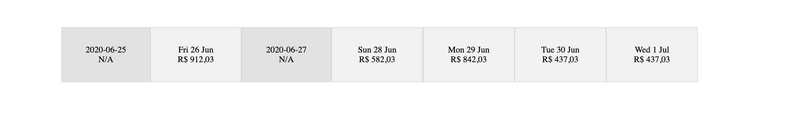

Componente de Best Prices
Vamos começar com o código que corresponde ao componente de Best Prices, aquele que é o carrossel de preços na parte da imagem a seguir.

Fazendo o request para para nosso serviço da parte 2
A primeira coisa que precisamos fazer para podermos utilizar os dois serviços (frontend e backend) em localhost é implementar um sistema de CORS no serviço GraphQL que fizemos anteriormente. Essa mudanca é bastante simples e impacta muito pouco na estrutura do código. O que vamos fazer é adicionar a crate actix-cors no Cargo.toml:
[package]
name = "recommendations-gql"
version = "0.1.0"
authors = ["Julia Naomi <jnboeira@outlook.com>"]
edition = "2018"
# See more keys and their definitions at https://doc.rust-lang.org/cargo/reference/manifest.html
[dependencies]
actix-web = "2.0.0"
# ...
redis = "0.16.0"
actix-cors = "0.2.0"
[dev-dependencies]
bytes = "0.5.3"
Agora no arquivo main.rs precisamos adicionar as configurações de CORS, para isso disponibilizamos Cors através da diretiva use actix_cors::Cors; e dentro da função main criamos o recurso de Cors envolto em um wrap com:
#[actix_rt::main] async fn main() -> std::io::Result<()> { let resolvers: std::sync::Arc<Resolver> = std::sync::Arc::new(create_resolver()); HttpServer::new(move || { App::new() .data(resolvers.clone()) .wrap( Cors::new() // ... .finish(), ) .configure(routes) .default_service(web::to(|| async { "404" })) }) .bind("127.0.0.1:4000")? .run() .await }
Agora precisamos configurar quais domínios, métodos e headers serão adicionados. Existem duas maneiras de fazer isso, a primeira e mais simples é atraveés da função supported_credentials:
#![allow(unused)] fn main() { App::new() .data(resolvers.clone()) .wrap( Cors::new() .supports_credentials() .max_age(3600) .finish(), ) .configure(routes) .default_service(web::to(|| async { "404" })) }
E a segunda é adicionando explicitamente as informações com as funções allowed_*. Vamos utilizar esta abordagem:
#![allow(unused)] fn main() { App::new() .data(resolvers.clone()) .wrap( Cors::new() .allowed_origin("http://localhost:8080") .allowed_origin("http://127.0.0.1:8080") .allowed_origin("http://0.0.0.0:8080") .allowed_methods(vec!["GET", "POST"]) .allowed_headers(vec![header::AUTHORIZATION, header::ACCEPT]) .allowed_header(header::CONTENT_TYPE) .max_age(3600) .finish(), ) .configure(routes) .default_service(web::to(|| async { "404" })) }
Agora basta executar um make redis e depois um make run e esse serviço estará executando.
Printando o request
O passo mais básico que podemos fazer com um request é printar sua resposta na tela. Não precisamos de nenhum estilo bonito ou organização neste ponto, serve somente para sabermos que o request foi bem sucedido. Para fazermos isso, podemos começar pensando como será nossa view. Atualmente nossa view está com a seguinte aparência:
#![allow(unused)] fn main() { fn view(&self) -> Html { html! { <div> <p>{ "Hello world!" }</p> <p>{ "Hello Julia" }</p> </div> } } }
Mas se vamos fazer um request precisaremos de um booleano que indica o estado de loading e uma String que representa a resposta do do backend GraphQL:
#![allow(unused)] fn main() { fn view(&self) -> Html { if self.fetching { html! { <div class="loading"> {"Loading..."} </div> } } else { html! { <div> <p>{ if let Some(data) = &self.graphql_response { data } else { "Failed to fetch" } }</p> </div> } } } }
Assim, defini as duas propriedades da struct Airline são fetching que indica que um request está sendo feito e graphql_response que corresponde ao corpo da resposta do GraphQL. Nosso view possui duas modalidades definidas pelo if/else, caso o self.fetching seja true vamos exibir o texto Loading... no HTML, que podemos construir utilizando a macro html! e injetando o HTML correspondente os q desejamos executar, no caso html! {<div class="loading">{"Loading..."}</div>}. Já no nosso else utilizamos a macro html! da mesma forma, mas decidimos o que exibir com base no if-let que extrai o campo Option de graphql_response. Com isso, podemos começar a implementar a struct Airline e implementar a função create que vai definir os valores iniciais de cada propriedade:
#![allow(unused)] fn main() { use yew::prelude::*; // ... pub struct Airline { // ... fetching: bool, graphql_response: Option<String> } pub enum Msg { // .. Fetching(bool) } impl Component for Airline { type Message = Msg; type Properties = (); fn create(_: Self::Properties, link: ComponentLink<Self>) -> Self { Airline { // ... fetching: false, graphql_response: None } } // ... } }
Note que a função create pertence a trait Component, que equivale as funções básicas do React. E o enum Msg do tipo Message funciona de forma que para cada mensagem enviada uma ação é tomada, o que explica os dois estados do if/else reagindo diferentemente ao self.fetching, que é recebido pela opção Msg::Fetching que recebe um bool. Esta funcionalidade de atualizar o estado pertence a função update da trait Component. Já a função update tem a seguinte aparência:
#![allow(unused)] fn main() { impl Component for Airline { type Message = Msg; type Properties = (); // ... fn update(&mut self, msg: Self::Message) -> ShouldRender { match msg { // ... Msg::Fetching(fetch) => { self.fetching = fetch; } } true } } }
Na função update para cada opção de Msg o match toma uma ação. Outra função importante nesse contexto é a função create que funciona de forma a atualizar a view em caso de alguma propriedade mudar:
#![allow(unused)] fn main() { impl Component for Airline { type Message = Msg; type Properties = (); // ... fn change(&mut self, _: <Self as yew::html::Component>::Properties) -> bool { false } } }
Na função change, se alguma propriedade mudar, é preciso retornar true, e se nada acontecer retornar false. Com isso, falamos de todas as funções de implementação obrigatória da trait Component, mas ainda temos uma função extra que podemos utilizar para nossa aplicação, a rendered, que corresponde ao componentDidMount do React, e ela é aplicada de forma diferente para o primeiro render:
#![allow(unused)] fn main() { fn rendered(&mut self, first_render: bool) { if first_render { Msg::Fetching(true); self.fetch_data(); } } }
Para o primeiro render atualizamos o estado de fetching para true com Msg::Fetching(true) para que possamos exibir Loading... na view:
#![allow(unused)] fn main() { fn view(&self) -> Html { if self.fetching { html! { <div class="loading"> {"Loading..."} </div> } } // ... } }
Depois disso, temos a função que executa o fetch em si, self.fetch_data(). Para essa função vamos precisar de um novo impl que nos permita acessar o self de Airline:
#![allow(unused)] fn main() { use crate::gql::fetch_gql; impl Airline { pub fn fetch_data(&mut self) { let request = fetch_gql(); let callback = self.link.callback( move |response: Response<Text>| { let (meta, data) = response.into_parts(); if meta.status.is_success() { Msg::FetchGql(Some(data)) } else { Msg::FetchGql(None) } }, ); let request = Request::builder() .method("POST") .header("content-type", "application/json") .uri(self.graphql_url.clone()) .body(Json(&request)) .unwrap(); let task = self.fetch.fetch(request, callback).unwrap(); self.fetch_task = Some(task); Msg::Fetching(false); } } }
Primeiro passo de fetch_data é função da fetch_gql do módulo gql, que retorna o Json para executar a query no serviço, que depende da crate serde_json:
#![allow(unused)] fn main() { use serde_json::{json, Value}; pub fn fetch_gql() -> Value { json!({ "query": "{ bestPrices(departure: \"2020-07-21\", origin: \"POA\", destination: \"GRU\") { bestPrices { date available price {amount} } } }" }) } }
Em seguida, encontramos self.link, um novo tipo a ser adicionado a nossa struct Airline, que é do tipo ComponentLink<Self>, cuja principal função é fazer callback. No nosso caso, esses callback processam a resposta da requisição, response, separam a resposta através da funçnao into_parts em metadados, meta, e em corpo, data para executar um pattern matching dos valores. Se a requisição retornou 2xx, através da função meta.status.is_success(), enviamos a mensagem Msg::FetchGql(Some(data)), senão enviamos a mensagem Msg::FetchGql(None).
O próximo passo é montar a requisição com yew::services::fetch::Request::builder(), na qual definimos o método com method("POST"), os headers, a url já salva em self.graphql_url e o corpo do request em body, que é o tipo Value retornado em let request = fetch_gql(); transformado em Json através da função Json(). Por último definimos o fetch com seu request e seu callback, fetch(request, callback) e passamos seu resultado para FetchTask definida em self.fetch_task, que executará o fetch:
#![allow(unused)] fn main() { let task = self.fetch.fetch(request, callback).unwrap(); self.fetch_task = Some(task); }
Para então definirmos que fetching é false em Msg::Fetching(false). Agora precisamos adicionar os novos tipos de dados presentes em nossa struct Airline:
#![allow(unused)] fn main() { use yew::prelude::*; use yew::services::{ fetch::{FetchService, FetchTask, Request, Response} }; use yew::format::{Text, Json}; use crate::gql::fetch_gql; pub struct Airline { fetch: FetchService, link: ComponentLink<Self>, fetch_task: Option<FetchTask>, fetching: bool, graphql_url: String, graphql_response: Option<String> } impl Airline { pub fn fetch_data(&mut self) { // ... } } pub enum Msg { FetchGql(Option<Text>), Fetching(bool) } impl Component for Airline { type Message = Msg; type Properties = (); fn create(_: Self::Properties, link: ComponentLink<Self>) -> Self { Airline { fetch: FetchService::new(), link: link, fetch_task: None, fetching: true, graphql_url: "http://localhost:4000/graphql".to_string(), graphql_response: None } } // ... } }
Para cada um dos campos:
fetch: FetchService:FetchServiceé a struct com conhecimentos de como realizar um Fetch via WebAssembly, algo como ofetchem JavaScript. Para inicializar este valor basta executarFetchService::new().link: ComponentLink<Self>: como já falamos é responsável por fazer as conexões doComponentcomcallbacks. É inicializado com pelo próprioComponent.fetch_task: Option<FetchTask>: é basicamente um handler para os request. Se seu estado éNonenada é executado, se seu estado éSomecom algumaFetchTaskele a executa. Inicializado comNone.fetching: true,: Indica se a aplicação está fazendo um request. Inicializado comtruepois é a primeira coisa que o sertviço executa.graphql_url: String,: Url na qual faremos o request, neste caso o nosso endpoint local/graphql,"http://localhost:4000/graphql".graphql_response: Option<String>: Por enquanto um tipo String que contém os dados da resposta do Graphql. Logo transformaremos em uma struct com domínio próprio.
Modelando a response de BestPrices
Nosso Json de resposta é o seguinte:
{
"data":{
"bestPrices":{
"bestPrices":[
{
"date":"2020-07-18",
"available":true,
"price":{
"amount":110.03
}
},
{
"date":"2020-07-19",
"available":true,
"price":{
"amount":110.03
}
},
{
"date":"2020-07-20",
"available":true,
"price":{
"amount":110.03
}
},
{
"date":"2020-07-21",
"available":true,
"price":{
"amount":110.03
}
},
{
"date":"2020-07-22",
"available":true,
"price":{
"amount":110.03
}
},
{
"date":"2020-07-23",
"available":true,
"price":{
"amount":110.03
}
},
{
"date":"2020-07-24",
"available":true,
"price":{
"amount":99.03
}
}
]
}
}
}
Assim, resumidamente, nosso tipo bestPrices é um vetor de date, available e price:
{
"date":"2020-07-24",
"available":true,
"price":{
"amount":99.03
}
}
Para este Json vamos precisar da crate serde, basta adicionar ela no Cargo.toml, pois vamos precisar Serializar e Deserializar as informações do response neste momento. Depois, precisamos adicionar as informações básicas da response {"data":{ "bestPrices":{ ... }}}, faremos isso com as seguintes structs no módulo gql:
#![allow(unused)] fn main() { use crate::best_prices::BestPrices; // ... #[derive(Serialize, Deserialize, Debug, PartialEq, Clone)] pub struct GqlResponse { data: GqlFields } #[derive(Serialize, Deserialize, Debug, PartialEq, Clone)] #[serde(rename_all = "camelCase")] pub struct GqlFields { best_prices: BestPrices } }
Como já expliquei Serde na parte anterior, não vou entrar em detalhes de novo. Agora, precisamos implementar a struct BestPrices no novo módulo best_prices, que conterá as seguintes structs:
#![allow(unused)] fn main() { use serde::{Deserialize, Serialize}; #[derive(Serialize, Deserialize, Debug, PartialEq, Clone)] #[serde(rename_all = "camelCase")] pub struct BestPrices { best_prices: Vec<BestPrice> } #[derive(Serialize, Deserialize, Debug, PartialEq, Clone)] pub struct BestPrice { date: String, available: bool, price: Option<Price> } #[derive(Serialize, Deserialize, Debug, PartialEq, Clone)] pub struct Price { amount: f64 } }
Por último, precisamos modificar Airline para converter o tipo graphql_response em Option<GqlResponse> e atualizar o update para que ele faça a transformação de String para GqlResponse através da função serde_json::from_str(&val).unwrap():
#![allow(unused)] fn main() { fn update(&mut self, msg: Self::Message) -> ShouldRender { Msg::FetchGql(data) => { self.graphql_response = match data { Some(Ok(val)) => { self.fetching = false; let resp: GqlResponse = from_str(&val).unwrap(); Some(resp) }, _ => { self.fetching = false; None } } }, // ... } }
Nossa view reclará de tipos incompatíveis agora, para isso, vamos apenas utilizar a função serde_json::to_string:
#![allow(unused)] fn main() { if let Some(data) = &self.graphql_response { serde_json::to_string(data).unwrap() } else { "Failed to fetch".to_string() } }
Construindo a view de BestPrices
A primeira mudança que vamos fazer é adicionar uma animação de loading no lugar do texto, para isso vamos adicionar um css no caminho static/styles.css e incluir isso no index.html:
<html lang="en">
<head>
<meta charset="utf-8">
<link rel="stylesheet" href="./styles.css">
<title>Yew Sample App</title>
<script type="module">
import init from "./wasm.js"
init()
</script>
</head>
<body></body>
</html>
.loading-margin {
margin: 25rem;
}
.loader {
border: 1.25rem solid #f3f3f3; /* Light grey */
border-top: 1.25rem solid #03253b; /* Blue */
border-radius: 50%;
width: 12.5rem;
height: 12.5rem;
animation: spin 2s linear infinite;
}
@keyframes spin {
0% { transform: rotate(0deg); }
100% { transform: rotate(360deg); }
}
E adicionar os estilos no view:
#![allow(unused)] fn main() { fn view(&self) -> Html { if self.fetching { html! { <div class="loading-margin"> <div class="loader"></div> </div> } } // ... } }
Agora podemos implementar a função view para BestPrices, que será basicamente um carrousel com várias células centralizadas, conforme a imagem a seguir e seu css correspondente:

/* ... */
.body {
width: 80%;
text-align: center;
}
.carrousel {
transform: translate(10%, 50%);
display: table-row;
}
.cell {
text-align: center;
vertical-align: middle;
font-size: medium;
height: 100%;
width: 15rem;
display: table-cell;
border: 1px solid lightgrey;
}
.empty-cell {
padding: 2rem 1rem;
background-color: #e1e1e1;
}
.full-cell {
padding: 2rem 1rem;
background-color: #f1f0f0;
}
A função view será uma implementação da struct BestPrices e fará uma iteração sob cada um dos 7 elementos do vetor. Note que os dias que vierem com available = false, também virão com price = None e precisamos tratar este caso também. Começamos com algo bem simples como:
#![allow(unused)] fn main() { impl BestPrices { pub fn view(&self) -> VNode { let carrousel = format!("De frente para este {:?}", "carrosel"); html!{ <div class="carrousel"> {carrousel} </div> } } } }
Neste caso, o que fizemos foi criar uma implementação pública de BestPrices da função view que retorna um VNode, que é basicamente um nodo virtual deste HTML que está sendo gerado. a variável carrousel está englobada por uma classe css chamada .carrousel que translada o carrosel para baixo e para o meio e transforma-se em uma linha de tabela, table-row. Depois disso, podemos chamar esta função no nosso app com:
#![allow(unused)] fn main() { fn view(&self) -> Html { if self.fetching { html! { <div class="loading-margin"> <div class="loader"></div> </div> } } else { html! { <div class="body"> { if let Some(data) = &self.graphql_response { data.clone().best_prices().view() } else { html!{ <p class="failed-fetch"> {"Failed to fetch"} </p> } } } </div> } } } }
Antecedendo a chamada da view criei uma função que encurta o retorno do campo best_prices, do tipo BestPrices, e evita que ele seja público. Essa fução pode ser encontrada no módulo gql da seguinte forma:
#![allow(unused)] fn main() { impl GqlResponse { pub fn best_prices(self) -> BestPrices { self.data.best_prices } } }
O próximo passo é é transforma a variável carrousel em uma lista de Vec<HTML> para podermos renderizá-la conforme o exercício. Para isso, vamos pegar o valor de self.best_prices e iterar sobre ele aplicando um map que transforma cada Best_rice em um Html da seguinte forma self.best_prices.into_iter().map(|bp| html!{...}).collect::<Html>(). Quanto ao map precisamos definir qual tipo de célula utilizar, especialmente por conta do campo price que é Option, faremos isso com a propriedade bp.available. Se bp.available for true, criamos uma célula cheia com as propriedades de data e preço, se for false criamos uma célula vazia com a propriedade de data e uma indição de preço indisponível como N/A:
#![allow(unused)] fn main() { .map(|bp| html!{ <div class="cell"> { if bp.available { html!{ <div class="full-cell"> { { let date = Utc.datetime_from_str(&format!("{} 00:00:00", bp.date), "%Y-%m-%d %H:%M:%S"); date.unwrap().format("%a %e %b").to_string() } } <br/> {format!("R$ {}", bp.price.unwrap().amount).replace(".", ",")} </div> } } else { html!{ <div class="empty-cell"> { { let date = Utc.datetime_from_str(&format!("{} 00:00:00", bp.date), "%Y-%m-%d %H:%M:%S"); date.unwrap().format("%a %e %b").to_string() } } <br/> {"N/A"} </div> } } } </div> }) }
Nosso map tem a seguinte aparência, uma célula externa que possui as configurações globais pra todas as células, classe .cell, que define tamanho, alinhamento e comportamento de display do tipo célula de tabela, table-cell. Dentro da célula aplicamos um if/else dependendo se o BestPrice está available ou não. Para o casa de available = false retornamos uma célula somente com a data, formatada, e um valor indicando a ausência de preços, N/A, ambos separados por uma quebra de linha <br/>. O estilo desta célula será empty-cell, que é basicamente uma célula mais escura que a célula padrão.
O padrão de data que estamos utilizando é o mesmo do site, que indica o dia da semana seguido pelo dia do mês e o mês correspondente. Para podermos fazer essa modificação vamos utilizar a crate chrono = "0.4.11" importando ela no módulo best_prices com use chrono::prelude::*;. A data que recebemos do best_prices está no formato ano-mes-dia e para fazermos o parse para o Utc precisamos dp formato ano-mes-dia hora:min:seg, e fazemos esta modificação utilizando a macro format!, format!("{} 00:00:00", bp.date). Com isso, teremos o formato "%Y-%m-%d %H:%M:%S" que nos permitirá utilizar a função Utc.datetime_from_str para executar o parse da nossa data, bp.date. Com o resultado desta transformação podemos formatar a date no padrão dia-da-semana dia-do-mes mes, "%a %e %b".
Para o caso available = true utilizamos o mesmo padrão de formatação de data, mas em vez de utilizar N/A vamos formatar o valor de bp.price para incluir R$ e trocar . por ,, format!("R$ {}", bp.price.unwrap().amount).replace(".", ",").
Nosso próximo passo é compor todas as recomendações.